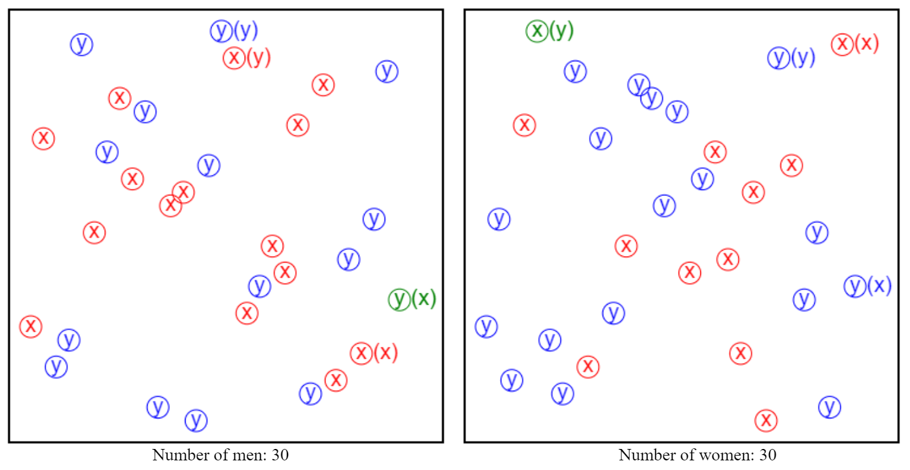

Projects
Click on a project name for a brief explanation.
-
Network alignment is the algorithmic problem of how to map biological networks to discover their similarities. It can be seen as the analogous of sequence alignment, but for graphs instead of strings. This makes the problem NP-hard. For my undergrad thesis, I developed an algorithm based on the simulated annealing metaheuristic which substantially outperformed other existing methods. The project yielded a series of papers, of which I am a coauthor on two of them (papers [C1,C2]), with a third one on the works.
-
The RACSO online Judge is a teaching tool for the subject of «Theory of Computation». It contains a collection of automatically-evaluated exercises asking to define recognizers/generators of formal languages (regular or context-free), as well as exercises asking for reductions between problems (undecidable or NP-complete). The judge also contains exercises for a compilers course.
RACSO was developed at Polytechnic University of Catalonia, where it is used for homework and even for exams. After using it myself as a student, I started a working on expanding it. I contributed most of the exercises in the lists for reductions to SAT and syntax parsers, and some exercises in other lists. I also helped code the interpreter for the language in which the SAT reductions are given.
The interesting aspect of these judges is that the evaluation is not simply based on test cases. Here is a technical report about the inner workings of the judge for evaluating syntax parsers.
-
An in-memory hash table that acts as a Cache for a Key-Value storage. It is inspired by Redis and Memcached. It has an LRU (least recently used) eviction mechanism, and it also supports timeouts: entries expire after a certain TTL (
time-to-live
). The project focuses on how to handle expired entries. They can be handled in two ways: 1) passively, when they arediscovered
through read/write operations. 2) actively, by searching for them.Using only passive removal may result in the LRU mechanism evicting entries that are still
alive
while the cache is poluted by expired entries. Memcached uses a segmented LRU mechanism which takes TTL's into account. It can be considered as a type of passive removal. In contrast, Redis implements an active probabilistic algorithm to keep the fraction of expired entries low, which I implemented in this project. In the future, this project may serve as a testbed for comparing different algorithms for handling expired entries. -
The
two-list stable matching problem
is an open problem in the field of market design. I made an interactive visual exploration tool to assist in solving it. See the github page for a description of the problem and the tool.The demo requires a mouse, so it is not mobile friendly.
 -
My research often has geometric aspects, and geometric data is not easy to grasp in text form. To aid in this, I made the
Draw API
interface which accepts drawing instructions and shows the result in SVG. This is useful to visualize computationally generated geometric data and avoid having to draw it out by hand.While drawing software with support for
scripting
already exists, I kept the language minmalistic so that it is easy to generate the drawing instructions from any language/environment, and instead of running a drawing software/library, one can just copy-paste them on the web interface.The demo is not intended for mobile users.
-
Sanim is both a markup language for preparing presentations, and a parser for this language that produces the presentations. The transition between slides is animated using Manim.
Manim (Math ANIMation) is an animation engine for explanatory math videos made for the youtube channel 3Blue1Brown.
Sanim encapsulates Manim so that the user can prepare slides with a style similar to Manim but without needing to write code. In addition, the slides are displayed in a browser, and the user can trigger the forward and backward animations using arrow keys.
For the demo, use the right arrow key to show the slides (not possible on mobile). See more on the github repo.
More projects on my Github page.